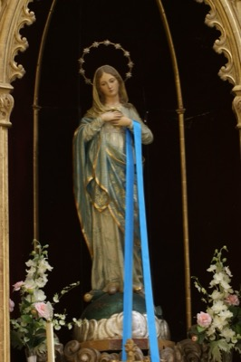
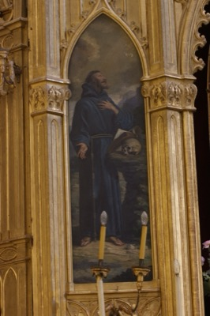
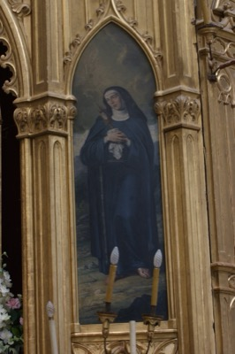
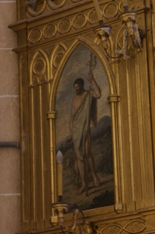
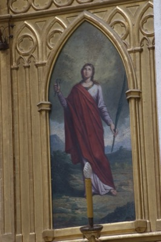
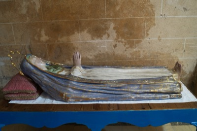
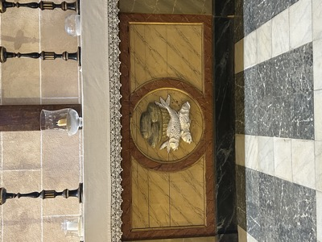

Purísima
Toca para ver la ficha

San Francisco de Asís
Toca para ver la ficha

Santa Clara
Toca para ver la ficha

San Juan Bautista
Toca para ver la ficha

Santa Apolonia
Toca para ver la ficha

Virgen Dormida
Toca para ver la ficha

Altar sin retablo
Toca para ver la ficha